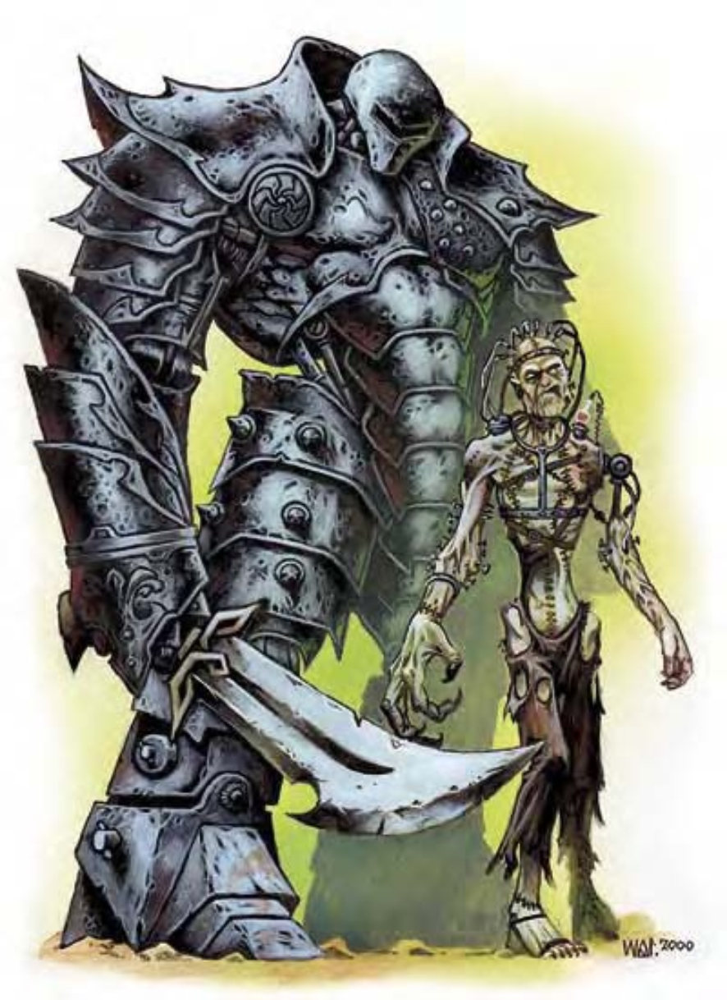

| 资料栏位 | 铁魔像 (Iron Golem) 大型构装生物 |
| 生命骰 | 18d10+30 (129HP) |
| 先攻 | -1 |
| 速度 | 20英尺 (4格) |
| 防御等级 | 30 (-1体型、-1敏捷、+22天生)、接触8、措手不及30 |
| 基本攻击/擒抱 | +12 / +28 |
| 攻击 | 挥击+23近战 (2d10+11) |
| 全力攻击 | 2挥击+23近战 (2d10+11) |
| 占据/触及 | 10英尺 / 10英尺 |
| 特殊攻击 | 喷吐攻击 |
| 特殊能力 | 构装特性、伤害减免15 / 精金、黑暗视觉60英尺、对魔法免疫、昏暗视觉 |
| 豁免 | 强韧+6、反射+5、意志+6 |
| 属性 | 力量33、敏捷9、体质―、智力―、感知11、魅力1 |
| 技能 | ― |
| 专长 | ― |
| 环境 | 任何 |
| 组织 | 单独或成队 (2-4) |
| 挑战级数 | 13 |
| 宝藏 | 无 |
| 阵营 | 总是绝对中立 |
| 进化 | 19-24HD (大型)；25-54HD (超大型) |
| 等级修正值 | ― |
这个金属构装生物有人类两倍高，像一个全副武装的巨人。
这种魔像有着由铁构成的人形身体。
铁魔像与石魔像一样，可以做成任何模样，但多数都被打造成某种盔甲的样子。铁魔像的表面比石魔像平滑，有时会单手拿着短剑。
铁魔像有12英尺高，体重约5000磅。
铁魔像不能说话也不能发出任何声音，也没有任何明显的气味。它的步伐沉重平稳，除非走在厚实的地上，否则每走一步都会造成地面震动。
战斗铁魔像是强大的战士。它的攻击强又准确，身体更是固若金汤，但锈蚀怪能将它变成一堆废铁。
喷吐攻击 (超自然)：每1d4+1轮可以制造出10英尺立方的毒云 (即时动作)，可维持1轮，初始伤害1d4体质，后续伤害3d4体质，通过强韧检定 (DC=19) 则无效。豁免检定DC的调整值与体质调整值相同。
对魔法免疫 (特异)：铁魔像对所有法术免疫，对类法术能力则有法术抗力。此外部分法术对铁魔像有不同的效果，详述于下。
所有造成电击伤害的法术效果同“缓慢术”，将使魔像迟缓3轮，且不可进行豁免检定。
任何会造成火焰伤害的魔法攻击将解除铁魔像的缓慢状态，且原本会造成的每3点伤害可医疗铁魔像1点。若医疗造成魔像的生命值超过上限，它将获得暂时生命值。举例而言，铁魔像受到“火球术”攻击时，若该攻击原可造成18点伤害，则医疗魔像6点。铁魔像对造成火焰伤害的魔法攻击不可进行豁免检定。
锈蚀攻击，如锈蚀怪的“锈蚀爪”法术可对铁魔像造成正常伤害。
铁魔像必须使用5000磅重的纯铁，掺入稀有染料与添加物熔铸，材料约值10000金币。组装身体时需要通“手艺 (制作盔甲)”或“手艺 (制作武器)”检定 (DC=20)。
挑战级数：16；制造构装生物 (见第318页)，“死云术”、“指使术”、“有限愿望”、“变形万物”。施法者等级至少16；交易价格150000金币；制造耗费80000金币+5600XP。